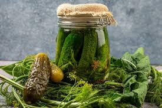
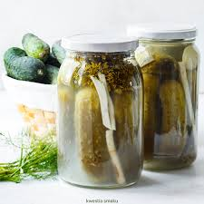
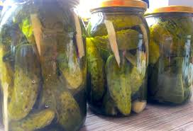
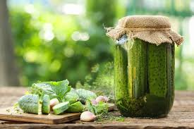
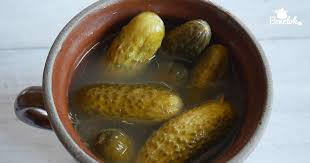
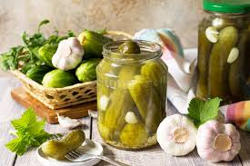
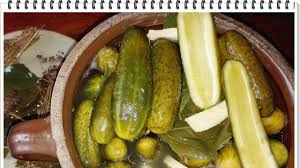

Ogórki kiszone takie same a jednak takie same
 ogórki kiszone pierwsze |
 ogórki kiszone drugie |
 ogórki kiszone trzecie |
 ogórki kiszone czwarte |
 ogórki kiszone piąte |
|  ogórki kiszone szóste |
ogórki kiszone siódme |
 ogórki kiszone ósme |
 ogórki kiszone dziewiąte |
 ogórki kiszone dziesiąte |